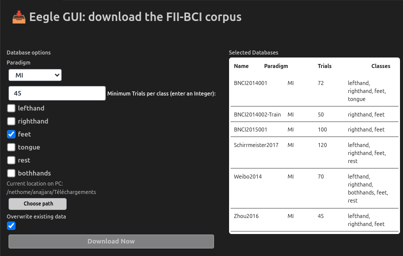

Database.jl
This module implements tools to facilitate the work with EEG databases, in particular, BCI databases in NY format — see the FII BCI Corpus Overview.
To learn how to use BCI databases, see Tutorial ML 2.
Most functionalities of this module are also encapsulated in the pyLittleEegle package for the Python language.
Structures
| Function | Description |
|---|---|
Eegle.Database.InfoDB | structure holding the information summarizing an EEG-BCI database |
Methods
| Function | Description |
|---|---|
Eegle.Database.loadDB | return a list of .npz files in a directory (this is considered a database) |
Eegle.Database.infoDB | print, save and return metadata about a database |
Eegle.Database.selectDB | select databases and sessions based on inclusion criteria |
Eegle.Database.weightsDB | get weights for each session of a database for statistical analysis |
Eegle.Database.downloadDB | run a web-based GUI to dowload the FII BCI corpus. |
📖
Eegle.Database.InfoDB — Type
struct InfoDB
dbName :: String
condition :: String
paradigm :: String
files :: Vector{String}
nSessions :: Vector{Int}
nTrials :: Dict{String, Vector{Int}}
nSubjects :: Int
nSensors :: Int
sensors :: Vector{String}
sensorType :: String
nClasses :: Int
cLabels :: Vector{String}
sr :: Int
wl :: Int
offset :: Int
filter :: String
doi :: String
hardware :: String
software :: String
reference :: String
ground :: String
place :: String
investigators :: String
repository :: String
description :: String
timestamp :: Int
formatVersion :: String
endImmutable structure holding the summary information and metadata of an EEG database (DB) in NY format.
It is created by functions infoDB and selectDB.
Fields
.filesreturns a list of .npz files, each corresponding to a session in the database. The length of.filesis equal to the total number of sessions.nSessions: vector holding the number of sessions per subject.nTrials: a dictionary mapping each class label to a vector containing the number of trials per session for that class. For example,nTrials["left_hand"]returns a vector with the number of trials for"left_hand"across all sessions.
The following fields are assumed constant across all sessions of the database. This is checked by Eegle when a database is read.
.dbName: name or identifier of the database.condition: experimental condition under which the DB has been recorded.paradigm: for BCI data, this may be :P300, :ERP or :MI — see BCI paradigm.nSubjects: total number of subjects composing the DB — see subject.nSensors: number of sensors composing the recordings (e.g., EEG electrodes).sensors: list of sensor labels (e.g., [Fz, Cz, ...,Oz]).sensorType: type of sensors (wet, dry, Ag/Cl, ...).nClasses: number of classes for which labels are available.cLabels: list of class labels.sr: sampling rate of the recordings (in samples).wl: for BCI, this is the duration of trials (in samples).offset: shift to be applied to markers in order to determine the trial onset (in samples).filter: temporal filter that has been applied to the data.hardware: equipment used to obtain the recordings (typically, the EEG amplifier).software: software used to obtain the recordings.reference: label of the reference electrode for EEG differential amplifiers.ground: label of the electrical ground electrode.doi: digital object identifier (DOI) of the database.place: place where the recordings have been obtained.investigators: investigator(s) that have obtained the recordings.repository: public repository where the DB has made accessible.description: general description of the DB.timestamp: date of the publication of the DB.formatVersion: version of the NY format in which the recordings have been stored.
Eegle.Database.loadDB — Function
function loadDB(dbDir=AbstractString, isin::String="")Return a list of the complete paths of all .npz files found in a directory given as argument dbDir. Such a directory is a database in NY format, thus, for each NPZ file there must be a corresponding YAML metadata file with the same name and extension .yml, otherwise the file is not included in the list.
If a string is provided as kwarg isin, only the files whose name contains the string will be included.
See Also
selectDB, infoDB, FileSystem.getFilesInDir
Examples See the first example of weightsDB
Eegle.Database.infoDB — Function
function infoDB(dbDir)Create a InfoDB structure and show it in Julia's REPL.
The only argument (dbDir) is the directory holding all files of a database in NY format.
This function carry out a sanity checks on the database and prints warnings if the checks fail.
See Also
Examples
db = infoDB(dbDir)Eegle.Database.selectDB — Function
function selectDB(<corpusDir :: String,>
paradigm :: Symbol;
classes :: Union{Vector{String}, Nothing} =
paradigm == :P300 ? ["target", "nontarget"] : nothing,
minTrials :: Union{Int, Nothing} = nothing,
summarize :: Bool = true,
verbose :: Bool = false)Select BCI databases pertaining to the given BCI paradigm and all sessions therein meeting the provided inclusion criteria.
Return the selected databases as a list of InfoDB structures, wherein the InfoDB.files field lists the included sessions only.
Arguments
corpusDir: the directory on the local computer where to start the search. Any folder in this directory is a candidate database to be selected.
If a folder with the same name of the paradigm (for example: "MI") is found in corpusDir, the search starts therein and not in corpusDir. This way you can use the same corpusDir for all paradigms.
If you have downloaded the FII BCI corpus using the provided GUI — see downloadDB —, you can simply omit this argument; Eegle will automatically search within the FII BCI Corpus directory.
paradigm: the BCI paradigm to be used. Supported paradigms at this time are:P300and:MI.
Optional Keyword Arguments
classes: the labels of the classes the databases must include:- for the P300 paradigm the default classes are
["target", "nontarget"], as in the FII BCI corpus. - for the MI and ERP paradigm there is no inclusion criterion based on class labels by default.
- for the P300 paradigm the default classes are
In the FII BCI corpus, available MI class labels are: left_hand, right_hand, feet, rest, both_hands, and tongue. Available P300 class labels are always the same two: target and nontarget.
minTrials: the minimum number of trials for all classes in the sessions to be included.summarize: if true (default) a summary table of the selected databases is printed in the REPL.
End the SelectDB line with a semicolon to easily visualize the summary table (see the examples).
verbose: if true print some feedback (in addition to the summary table)
See Also
Examples
# To point automatically to the FII BCI Corpus
DB_P300 = selectDB(:P300);
DB_MI = selectDB(:MI; classes = ["left_hand", "right_hand"]);
# To point to any corpus in any directory
selectedDB = selectDB(.../directory_to_start_searching/, :P300);
selectedDB = selectDB(.../directory_to_start_searching/, :MI;
classes = ["left_hand", "right_hand"]);
selectedDB = selectDB(.../directory_to_start_searching/, :MI;
classes = ["rest", "both_hands", "feet"],
minTrials = 50,
summarize = false,
verbose = true)Eegle.Database.weightsDB — Function
function weightsDB(files)Tutorials
Given a database in NY format, provided by argument files as a list of .npz files, where each file holds a BCI session, compute a weight for each session to be used in statistical analysis when merging any session-based relevant index such as the classification performance, within and across databases.
The goal of the weighting is to balance the contribution of all unique subjects, considering that the number of sessions for each subject may be different. Specifically, this weighting assigns each subject a total contribution that grows with the square root of the number of sessions provided and with the square root of the number of subjects in the database, thereby rewarding richer subject-level information, while preventing databases with many sessions or many subjects from dominating the analysis.
Let $s_m$ denote one of the $S_m$ sessions for each unique subject $m$, the weight $w_{m,s_m}$ for session $s_m$ is given by:
\[ w_{m,s_m} = \frac{\sqrt{M} \cdot \sqrt{S_m}}{S_m}\]
where $M$ is the number of unique subjects in the database and $N$ is the total number of sessions (i.e., length(files)).
This weighting ensures that the sum of the weights for each subject in the database is proportional to
\[\sqrt{M} \cdot \sqrt{S_m}\]
For example,
if database A has $M = 64$ unique subjects and each provides 1 session, $N = 64$ and the total weight for each session is $\frac{\sqrt{64}\cdot\sqrt{1}}{1} = 8$;
if database B also has $M = 64$ unique subjects, but each provides 4 sessions, the weight for each session is $\frac{\sqrt{64}\cdot\sqrt{4}}{4} = 4$ and the sum of the weights for each unique subject is $4 \cdot 4 = 16$, reflecting he fact that the subjects in database B provide more sessions than the subject in database A, thus they should be weighted more;
if database C has $M = 16$ unique subjects providing 4 sessions each as in database B, the weight for each session is $\frac{\sqrt{16}\cdot\sqrt{4}}{4} = 2$ and the sum of the weights for each unique subject is $4 \cdot 2 = 8$, reflecting the fact that database C provides fewer subjects than database B;
if database D has $M = 4$ unique subjects, two of which providing 1 session and two of which providing 4 sessions, the weight for each session of the subjects providing 4 sessions is $\frac{\sqrt{4}\cdot\sqrt{4}}{4} = 1$ and the weight for each session of the subjects providing 1 session is $\frac{\sqrt{4}\cdot\sqrt{1}}{1} = 2$, thus the total weight for the subjects providing 4 session is $4 \cdot 1 = 4$, which is larger than that of subjects providing a single session ($2$), reflecting the fact that these subjects provide more session.
This is a compromise between two extreme strategies commonly used when merging indices across subjects and/or databases, which are both inadequate:
- Uniform per-session weights (i.e., all sessions contribute equally), which overemphasizes larger databases and subjects providing many sessions
- Uniform per-database weights (i.e., all databases contribute equally), which overemphasizes small databases and subjects providing many sessions.
Once obtained the weights for one or more databases, they can be globally normalized in any desired way (e.g., to unit mean or unit sum), within databases, or, concatenating them, across databases.
Return
weights: a vector of length $N$, containing the weight corresponding to each session infilesschedule: an $M × 2$ matrix of integers where:- the first column contains the index of the unique subjects
- the second column contains the number of sessions for those subjects.
Examples
Example 1 uses the loadDB function to create weights for all .npz files found in directory dir which name contains the string "condition1".
The following two examples select motor imagery databases featuring classes "lefthand" and "righthand" from the FII BCI Corpus using the selectDB function and compute the weights for all files (i.e., sessions) in all selected databases. In particular:
Example 2 computes and normalize to unit mean the weights separately for each database. Once this is done, computing the mean of any index (e.g., balanced accuracy) weighted by
wwithin each database will result in the weighted average index across all sessions within each database, as defined above.Example 3 stacks the weights for all databases in a single vector and normalize all weights to unit mean. Once this is done, computing the mean of any index (e.g., balanced accuracy) stacked in the same way across databases and weighted by
wwill result in the weighted average index across all sessions and all databases as defined above.
using Eegle
# Example 1
w, schedule = weightsDB(loadDB(dir, "condition1"))
# Example 2
DB_MI = selectDB(:MI; classes = ["left_hand", "right_hand"])
w = [weightsDB(db.files)[1] for db ∈ DB_MI]
w = [v ./= mean(v) for v ∈ w]
# Example 3
DB_MI = selectDB(:MI; classes = ["left_hand", "right_hand"])
w = vcat([weightsDB(db.files)[1] for db ∈ DB_MI]...)
w ./= mean(w)Eegle.Database.downloadDB — Function
(1)
function downloadDB()
(2)
function downloadDB(url::String, dest::String = homedir())
(3)
function downloadDB(urls::Vector{String}, dest::String = homedir())(1) Interactive GUI mode
Open an interactive GUI to select and download databases from the FII BCI Corpus.
The size of the corpus on disk is 36.6 GB for MI and 14.2 GB for P300.
The GUI will open in the primary HTML display found in the Julia display stack, which typically is VS Code if you use it or the default web-browser. It looks like this:

Once a BCI paradigm is chosen (MI or P300), the following inclusion criteria can be enforced:
- the minimum number of trials per class
- the motor imagery classes (for MI paradigm only)
The table on the right lists the available databases given the current inclusion criteria.
The Choose path button invokes a folder selection window to choose the folder where the corpus is to be downloaded (default: homedir).
The folder selection window may open minimized. Check the task bar if you don't see it.
If the Overwrite existing data check box is not checked (default), the databases will be downloaded only if a folder with the same name does not exist already. If you have previously downloaded the corpus and you want to update to a new version, check this box.
As soon as the Download Now button is pressed, the GUI automatically downloads the databases, extracts their contents, and removes the ZIP archives.
A progress indicator is displayed in the REPL throughout the download and extraction process and a notification is printed when the download has ended.
Once the corpus is downloaded, Eegle knows automatically where to find it. Therefore, omitting the argument corpusDir while using function Eegle.Database.selectDB will automatically point to the FII BCI corpus.
(2) Direct download of a single Zenodo record
Argument url must point to a Zenodo record page (e.g. "https://zenodo.org/records/17670014").
All files associated with the record are downloaded into folder dest (the homedir by default).
A progress indicator is displayed in the REPL throughout the download and extraction process.
(3) Direct download of several Zenodo records
This is the same as (2), but for a vector of Zenodo record URLs.
A time out of three hours is enforced for the download of each database. If your connection requires more than that for a large database, consider downloading and unzipping such a database from Zenodo.
Examples
downloadDB() # run the GUI
downloadDB("https://zenodo.org/records/17670014")
downloadDB(["url1", "url2"], "/path/to/folder")